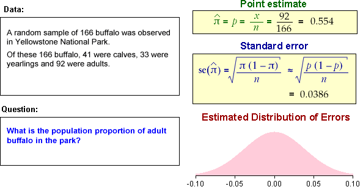
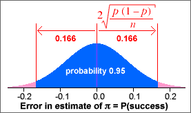
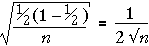
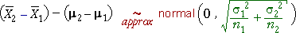

If you don't want to print now,
General framework
A similar approach to that for estimating a population mean is used for estimating population proportions and other parameters.
estimate - 2 s.e. to estimate + 2 s.e.
Population proportions and probabilities
Categorical data are usually treated as a random sample from some population. We concentrate on a single category which we will call success and we collectively call the other categories failures. The population proportion of successes is denoted by π. It is also the probability that a single randomly selected value from the population is a success.
We are interested in estimating an underlying probability, π. Although it is more general to treat π as a probability, it is usually easier to interpret π as a 'population proportion'.
Parameter estimate and error
The sample proportion of successes is denoted by p and is an estimate of π.

Since p is based on a random sample, it varies from sample to sample and has a distribution. The estimation error is:
error = p - π
Since π is unknown, we never know the value of the error, but we can find its approximate distribution. This will allow us to assess the likely size of the error.
Distribution of proportion
The proportion of successes from a random sample with probability π of success, p , has a distribution with mean and standard deviation
μp = π
σp = 
Distribution of estimation error
The estimation error is p - π and its distribution has the same shape as that of p, but is shifted to have mean zero. The bias and standard error are therefore
bias = μerror = 0
standard error = σerror = 
Standard error from data
Unfortunately, the formula for the standard error of p involves π, and this is unknown in practical problems. To get a numerical value for the standard error, we therefore replace π with our best estimate of its value, p .
bias = μerror = 0
standard error = σerror = 
Example
In a random sample of n = 36 values, there were x = 17 successes. Our best estimate of π is the sample proportion, p = 17/36. Using this estimate, the distribution of the number of successes in similar samples would be
X ~ binomial (n = 36, π = 17/36)

The proportion of successes in similar samples would have a scaled form of this distribution

and the error distribution would shift this to have mean zero:

From this error distribution, it is unlikely that our estimate of the proportion of successes (17/36) would be in error by more than 0.2.
Normal approximation to the error distribution
If the sample size, n, is large enough, the binomial distribution is approximately normal, so we have the approximation
error = p − π ~ normal (0,  )
)
Example

The error distribution (and standard error) give a good indication of how far our point estimate (0.554) will be from the true proportion of adults in the park.
95% bounds on the estimation error
When sample proportion p is used to estimate a corresponding population proportion, π, the resulting error has the approximate distribution,
error = p − π ~ normal (0,  )
)
Replacing π by our best estimate, p , and using the properties of the normal distribution,
Prob( error is between ± 2 ) ≈ 0.95
) ≈ 0.95
95% confidence interval
A 95% confidence interval for π is therefore...

Example
In a random sample of n = 36 values, there were x = 17 successes. We estimate the population proportion, π, with p = 17/36 = 0.472. The approximate normal distribution for the errors is shown below.

A 95% confidence interval for π is therefore
0.472 ± 0.166
i.e. 0.306 to 0.638
We are therefore 95% confident that the population proportion of successes is between 30.6% and 63.8%. A sample size of n = 36 is clearly too small to give a very accurate estimate.
Properties
As with all other confidence intervals, a 95% confidence interval for a population proportion, π, is random. Although it correctly includes π in 95% of random samples, there is a 5% probability that it will not include the true value of π.
The simulation below took 100 random samples of size n = 200 from a population with π = 0.6. Most of the confidence intervals included π = 0.6, but some did not. If the simulation was repeated many more times, the proportion including 0.6 would be close to 0.95.

In practice, you only have a single sample and a single confidence interval, but we have "95% confidence" that it will include the true (and usually unknown) value of π.
Problems with small sample sizes
This confidence interval for π was based on a normal approximation to the distribution of the sample proportion. If the sample size, n, is small or π is close to either 0 or 1, this normal approximation is inaccurate and the confidence level for the interval can be considerably less than 95%.
Many textbooks give the following guideline for using the confidence interval:
Only use the confidence interval for π when all of
the following hold...
|
These guidelines can be relaxed a little provided you accept that the confidence level may be a little less than 95%.
Interpretation of a confidence interval
We never know in practice whether or not the confidence interval that we obtain actually includes π.
Being right most of the time is the best one can hope for, since there is always the possibility of being misled by an unlucky sample.
The method that we use to obtain the confidence interval has probability 0.95 of including π. We cannot tell whether the single interval that we evaluate from our data set is one of these 'lucky' intervals, but knowing that the method works so often gives us 95% confidence in this interval.
Example

Exercises are only available online.
Exercises are only available online.
Exercises are only available online.
Worst-case standard error
The standard error of a sample proportion, p, has standard error

This is greatest when π = 0.5 and this provides a worst-case value for the standard error. Whatever the value of π, the standard error of the estimate will be less than

Reporting the accuracy from a survey
Public opinion polls often ask questions about a range of topics. Several proportions are usually estimated and a standard error and confidence interval could be found for each. (The standard error would vary depending on the particular sample proportion, p.)
Rather than giving separate confidence intervals for the individual proportions, the poll results are usually accompanied by a single value called the margin of error of the poll. This is the worst-case '±' value for a 95% confidence interval that arises when p = 0.5.

The '±' values of the 95% confidence intervals for all proportions reported in the poll will be less than this value — sometimes considerably less.
How much data do I need to collect?
Consider estimation of a population mean, µ, from a random sample of size n. A 95% confidence interval will be of the form

If we want our estimate to be within k of µ with probability 0.95, then we need n to be large enough that

Provided we can make a reasonable guess at the likely value of the sample standard deviation, s, it is possible to determine the necessary sample size by trial-and-error in the above inequality.
Equation for the sample size
If n is reasonably large the t-value in the inequality will be approximately 1.96, so

This inequality can be re-written in the form

In practice, it is best to increase n a little over this value in case the sample standard deviation was wrongly guessed.
Example
If we expect that a particular type of measurement will have a standard deviation of about 8, and we want to estimate its mean, µ, to within 2 of its correct value with probability 0.95, the sample size should be

This suggests a sample size of at least 62. (The more accurate trial-and-error method using a t-value would give a sample size of 64.)
How much data do I need to collect?
A 95% confidence interval for a probability π is of the form

If we want our estimate to be within k of π with probability 0.95, then we need n to be large enough that

In order to use this inequality, we need a guess at the value of p — it does not need to be particularly accurate.
A small pilot survey is often conducted to obtain a preliminary estimate for the proportion.
If we can do no better, the 'worst-case' value, p = 0.5 can be used, but the resulting sample size may be higher than needed.
Equation for the sample size
The inequality can be re-written in the form

Example
To estimate a proportion with 95% confidence of being within 0.04 of the correct value, we need

Without a better guess at the value of p, we can use p = 0.5, giving a sample size of 625 or more. If we had a rough idea of the likely value of p, the sample size could be reduced from this worst-case value.
Confidence interval for a mean
If the population standard deviation, σ, is a known value, a confidence interval for a population mean, µ has the form

The value k arises from the standard normal distribution,

The value k = 1.96 gives a confidence level of 95%, but different confidence levels can be found with other values of k.
| k | Confidence level |
|---|---|
| 1 | 0.683 |
| 2 | 0.954 |
| 3 | 0.997 |
| 1.645 | 0.90 |
| 1.960 | 0.95 |
| 2.576 | 0.99 |
Although 95% confidence intervals are most commonly reported, sometimes k is chosen to give a 90% or 99% confidence interval.
Estimating a probability with different confidence levels
A 95% confidence interval for a probability, π, has the form

Replacing the constant 2 with 1.645 gives an interval with approximately a 90% confidence level, and using 2.576 results in a 99% confidence level.
Estimating a population mean (unknown standard deviation)
When the population standard deviation, σ, is unknown, a 95% confidence interval for µ has the form

where tn-1 is obtained from a table. Changing the confidence level to 90% or 99% involves changing this constant. The appropriate value can again be obtained from a table. (We give no further details here.)
Exercises are only available online.
Exercises are only available online.
Exercises are only available online.
Exercises are only available online.
Difference between means
The difference between any two independent quantities X1 and X2 has a distribution with

Applying this to the difference between the means of two random samples,

Irrespective of the distributions within the
two groups,

Estimation error
The difference between the sample means,  ,
is a point estimate of the difference between the means of the underlying populations, µ2 - µ1.
In order to properly interpret it, we must understand the distribution of
the estimation error.
,
is a point estimate of the difference between the means of the underlying populations, µ2 - µ1.
In order to properly interpret it, we must understand the distribution of
the estimation error.

Replacing σ12 and σ22 by s12 and s22 gives an approximate error distribution,

The standard deviation of these errors is the standard error of the estimator.
Examples

Our best estimate is that anticipation of hypnosis results in a mean ventilation rate that is 0.491 higher than the control group. From the error distribution, the error in this estimate is unlikely to be more than about 0.6.